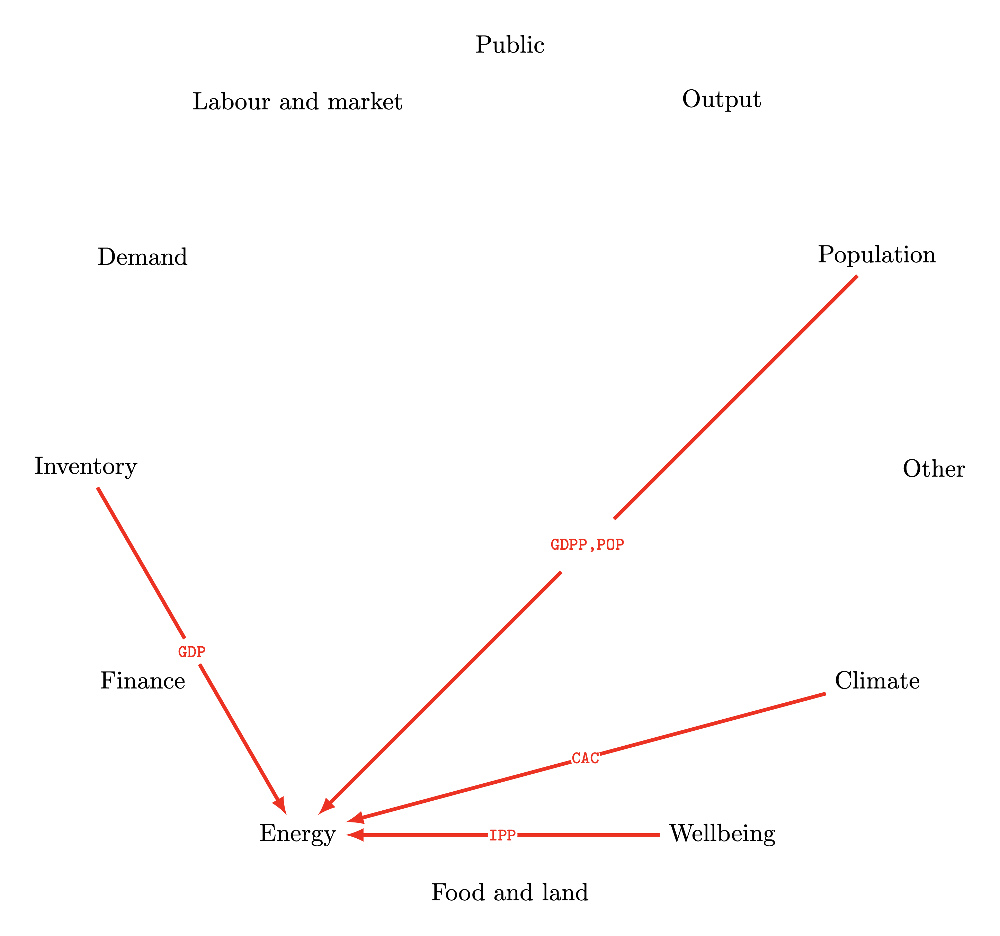
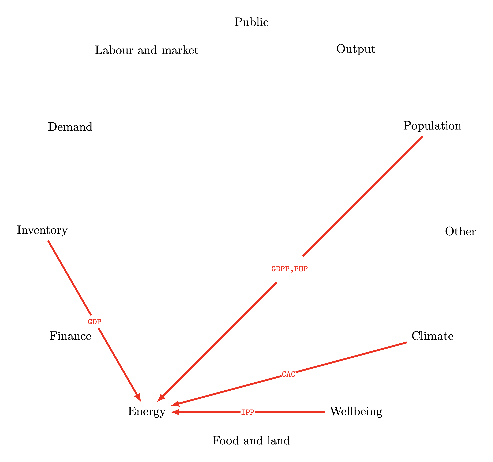
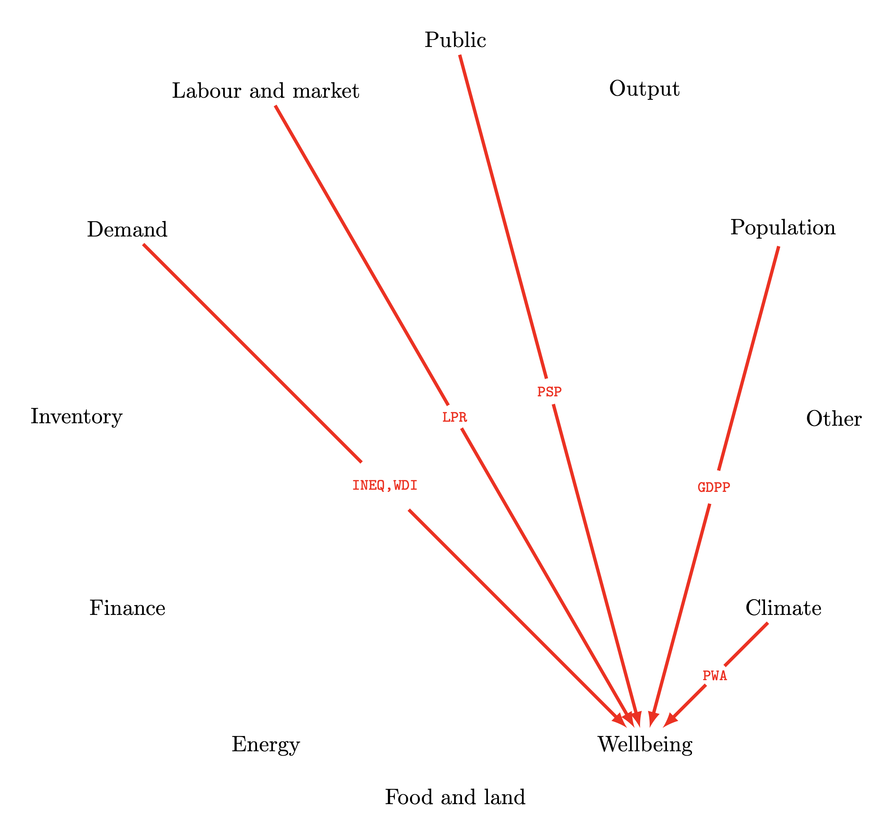
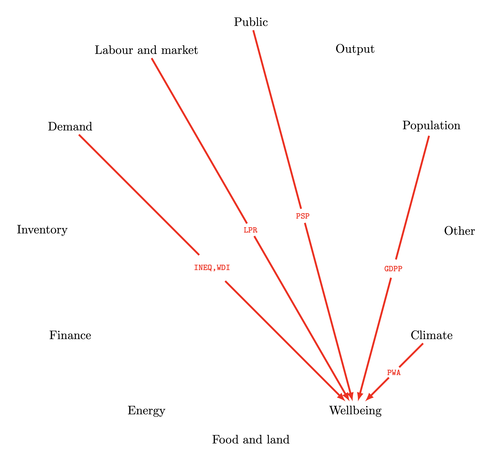

The Earth4All model
Summary
We describe the sectors of the Earth4All model, as they can be derived by the Vensim implementation, which is slightly different from the appendix of Dixson2022.
The sectors of the model
The model consists of the following sectors (the description are taken from Dixson2022).
Population. This sector generates total population from fertility and mortality processes, potential workforce size, and the number of pensioners.
Output. This sector generates GDP, consumption, investment, government spending, and jobs. The economy is seen as a sum of a private sector and a public sector.
Public sector. This sector generates public spending from tax revenue, the net effect of debt transactions, and the distribution of the budget on governmental goods and services (including on technological advance and the five turnarounds).
Labor and market. This sector generates the unemployment rate worker share of output, and the workforce participation rate, based on the capital output ratio.
Demand. This sector generates income distribution between owners, workers, and the public sector.
Inventory. This sector generates capacity utilization and the inflation rate.
Finance. This sector generates the interest rates.
Energy. This sector generates fossil fuel-based and renewable energy production, greenhouse gas emissions from fossil fuel use, and the cost of energy.
Food and land use. This sector generates crop production, environmental impacts of agriculture, and the cost of food.
Well-being trust and tension. This sector generates the societal ability to react to a challenge (like climate change) as a function of social trust and social tension, and it generates global indicators measuring both environmental and societal sustainability (including the Average Well-being Index). This sector corresponds to two distinct sectors in Dixson2022.
Climate. This sector is not explicitly mentioned in Dixson2022.
Other performance indicators. This sector is not explicitly mentioned in Dixson2022.
A figure representing the causal relationships between the sectors of the model is given in Randers2022: these relationships are summarized in the following figures, where the labels of the edges denote variable acronyms as specified in the interactive variable and parameter tables (the Earth4All model contains more than $500$ variables and almost $300$ constants, called parameters in WorldDynamics).

 



 
